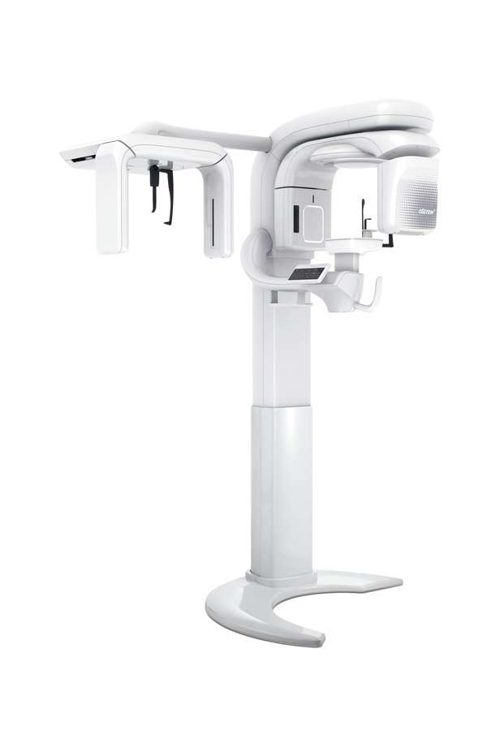
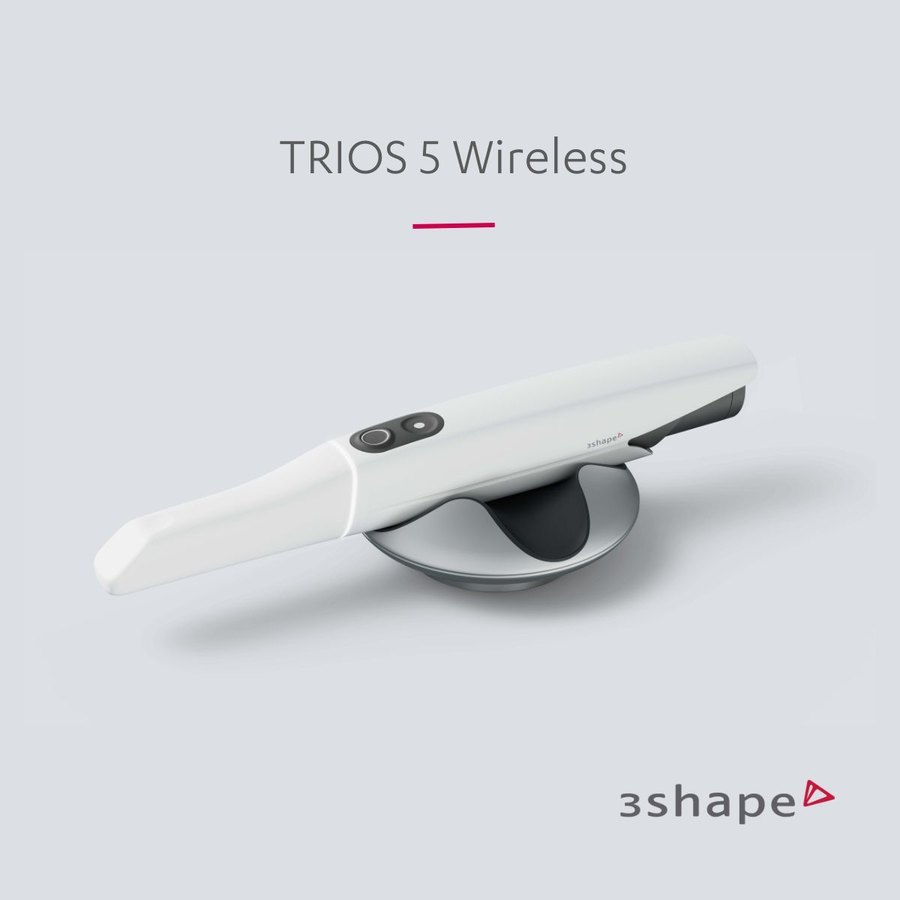
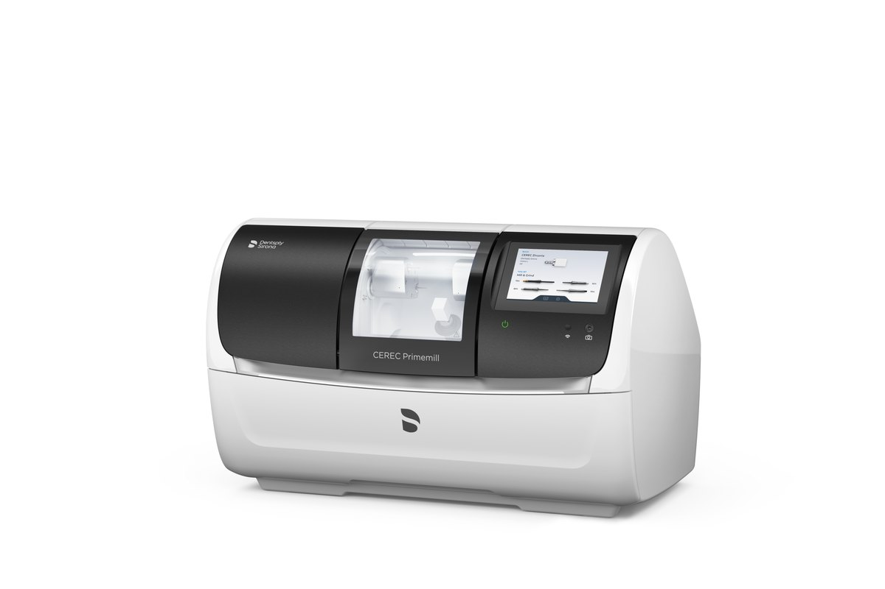
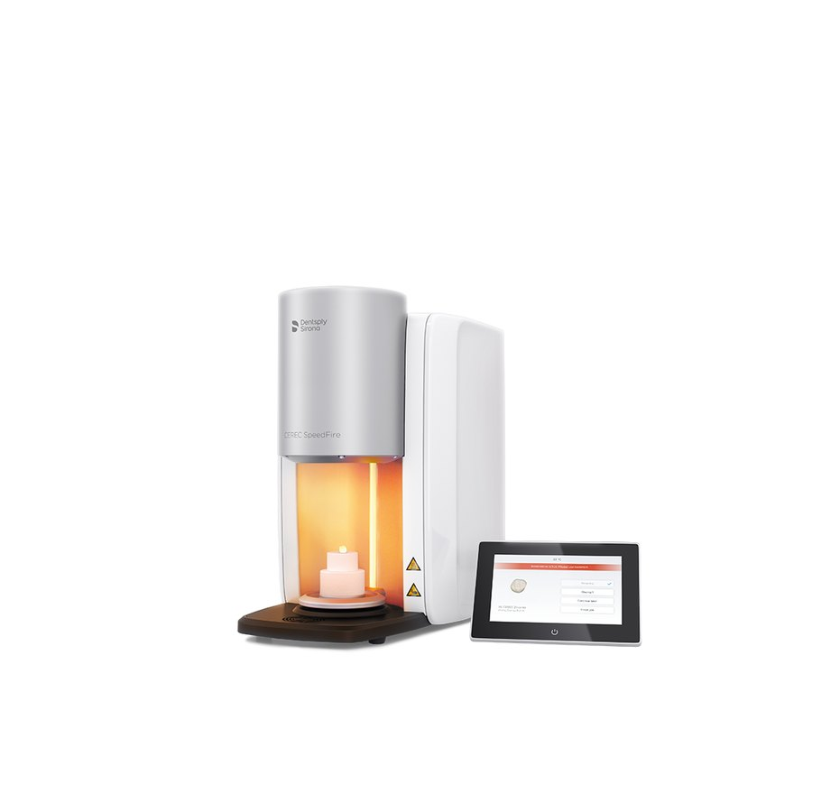

원데이 보철
인레이는 즉시 제작, 크라운은 케이스에 따라 당일 또는 익일 세팅을 고려합니다.
- 구강 스캔 기반 디지털 보철
- 내원 횟수와 업무 일정 고려
- 가능 여부는 진단 후 결정
Our Direction
서울삼성치과의원은 삼성전자 및 협력사 직장인 환자분들이 치료 시간을 예측하고, 치료 후 관리까지 이어갈 수 있도록 효율적인 치료 과정과 장기적인 유지관리를 함께 생각합니다.
Focused Care
각 진료는 “빠르게”보다 “정확하게, 필요한 만큼, 오래 안정적으로”를 기준으로 진행합니다.
인레이는 즉시 제작, 크라운은 케이스에 따라 당일 또는 익일 세팅을 고려합니다.
수술 시 PRF를 활용해 조직 치유와 안정적인 골이식을 고려합니다.
치료 한 번으로 끝내기보다 정기 관리로 치아 수명을 함께 지킵니다.
매복 사랑니와 서지컬 발치를 정밀 진단 후 계획합니다.
교정 후 보철·심미 결과까지 고려해 치료 계획을 세웁니다.
Care Details
치료 가능 여부와 범위는 구강 상태에 따라 달라질 수 있어, 정밀 진단 후 개인별 계획을 세웁니다.
인레이·온레이는 구강 스캔 후 디지털 방식으로 제작해 당일 수복을 고려합니다. 크라운은 치아 상태와 보철 종류에 따라 당일 또는 익일 세팅을 계획할 수 있습니다.
※ 모든 케이스가 원데이로 가능한 것은 아니며, 신경치료·잇몸 상태·교합에 따라 단계 치료가 필요할 수 있습니다.
임플란트 수술에서 뼈의 양과 잇몸 상태는 결과의 안정성에 큰 영향을 줍니다. 필요한 경우 PRF를 활용해 수술 부위의 치유 환경을 함께 고려합니다.
잇몸질환은 한 번 치료했다고 끝나는 병이 아니라, 염증이 반복되지 않도록 관리하는 질환입니다. 직장인 환자분들이 놓치기 쉬운 정기 관리 주기를 함께 잡아드립니다.
앞니 배열이나 교합 문제는 단순히 치아를 움직이는 것에서 끝나지 않을 수 있습니다. 필요한 경우 보철·심미 결과까지 함께 고려해 전체 치료 순서를 계획합니다.
For Office Workers
평일 업무 중 시간을 내어 방문하는 환자분들이 많기 때문에, 치료 전 “무엇을, 왜, 몇 번에 걸쳐” 진행하는지 먼저 설명드립니다.
Digital System
장비는 치료를 대신하지 않습니다. 다만 정확한 진단과 예측 가능한 치료 계획을 세우는 데 중요한 기준이 됩니다.

오스템 T2 Plus CBCT임플란트, 사랑니, 골이식 전 3차원으로 뼈와 신경 위치를 확인합니다.

TRIOS 5 구강 스캐너인상재 대신 구강을 디지털로 스캔해 보철·교정 계획에 활용합니다.

CEREC PrimeMill디지털 보철 제작 과정을 통해 원데이 보철 가능성을 높입니다.

SpeedFire지르코니아 보철물의 빠르고 안정적인 소결 과정을 돕습니다.
Principles
필요한 치료와 지켜볼 수 있는 부분을 구분합니다.
보이는 증상만이 아니라 원인과 예후를 함께 봅니다.
환자분이 납득하고 선택할 수 있도록 쉽게 설명합니다.
치료 결과가 오래 유지되도록 정기 관리를 중요하게 생각합니다.
FAQ
인레이는 즉시 제작을 우선 고려하고, 크라운은 치아 상태와 보철 종류에 따라 당일 또는 익일 세팅을 계획할 수 있습니다. 다만 신경치료나 잇몸 치료가 먼저 필요한 경우에는 단계적으로 진행합니다.
대부분의 매복 사랑니와 서지컬 발치는 3D 진단 후 발치 계획을 세웁니다. 신경과의 거리, 염증 여부, 전신 상태에 따라 난이도와 주의사항을 먼저 설명드립니다.
잇몸 상태와 치료 이력에 따라 다릅니다. 잇몸질환이 있거나 임플란트가 있는 경우에는 일반 검진보다 더 촘촘한 유지관리 주기가 필요할 수 있습니다.
치아 배열, 교합, 보철 필요성을 함께 확인합니다. 투명교정만으로 충분한 경우와 보철·심미 치료를 함께 고려해야 하는 경우를 구분해 안내드립니다.
Dentist
치과 치료가 조금이라도 덜 불안하고, 더 편안한 경험이 될 수 있도록 충분한 설명과 정밀한 진단을 바탕으로 진료합니다.
First Visit
접수와 문진을 여유 있게 진행할 수 있습니다.
타 병원 X-ray, CT, 진료 기록이 있다면 치료 계획에 도움이 됩니다.
수술, 발치, 진정 치료 전 안전을 위해 꼭 필요합니다.